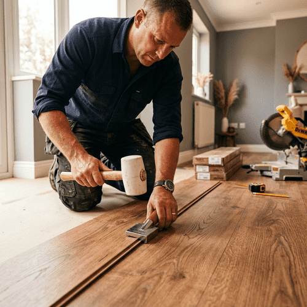

Transformăm casa ta cu pardoseli montate precis, cu finisaje premium și experiență locală. Îți livrăm un rezultat curat, durabil și estetic.

O pardoseală bună transformă încăperea, iar secretul stă în pregătire și detaliile de finisare. Abordăm fiecare proiect cu atenție maximă pentru durabilitate și aspect premium.
Montatori specializați pentru pardoseli laminat, parchet stratificat și LVT în Cluj-Napoca. Serviciu complet, de la pregătirea subpardoselii până la montajul plintelor.
Trimite-ne poze cu încăperea și modelul de pardoseală ales pe WhatsApp. Îți oferim un preț transparent și rapid.
Scrie-ne acumRecomandăm tipul de pardoseală potrivit și oferim îndrumări practice ca podeaua ta să arate bine ani de zile.
Nu ne oprim la montaj. Fiecare proiect include verificare finală, sfaturi de întreținere și garanție pentru liniștea ta.